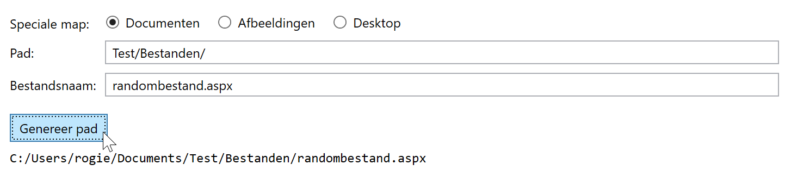
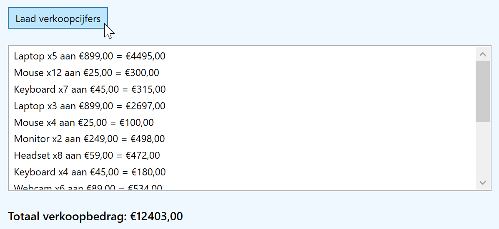
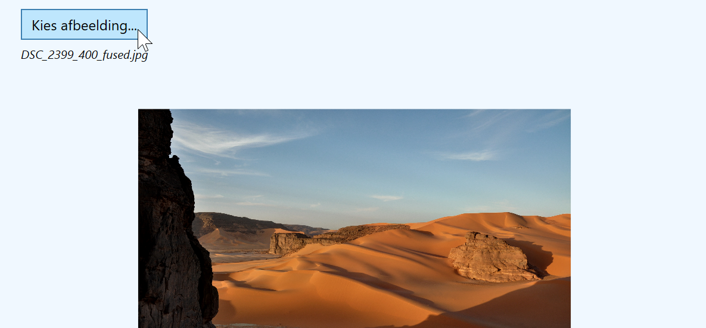
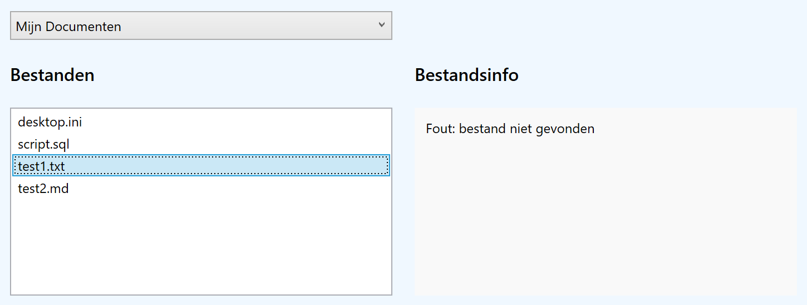
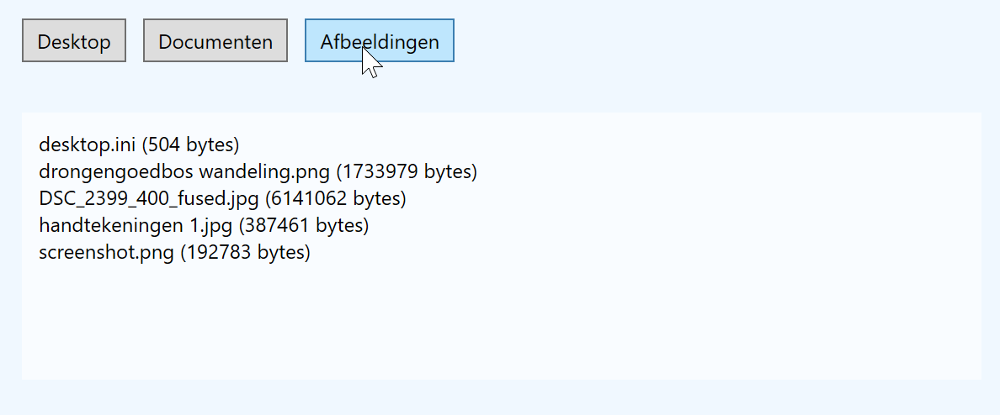

Hoe los je dit oefenblad op?
- Open dit oefenblad in Visual Studio 2026.
- De oefeningen vind je in de map Exercises, de opdrachten vind je hieronder
- Vul overal bij de oefeningen de code aan.
- Run het oefenblad en controleer het resultaat
Overzicht van de oefeningen:
Pad Builder
Doel: een volledig bestandspad samenstellen uit een speciale map (keuze via radiobuttons), een subpad en een bestandsnaam. Het resultaat wordt gegenereerd met Path.Combine en getoond in een TextBlock.
Theorie
De theorie vind je op https://rogiervdl.github.io/CS-course/09_bestanden.html#paden
XAML
De XAML is gegeven.
Code-behind
- Bij klik op de knop, stel het volledige pad samen met
Path.Combine()en toon het onderaan. - Normaliseer de gebruikte slashes met
.Replace('\\', '/');
Verwacht resultaat:

Lees CSV
Doel: een CSV-bestand inlezen en gegevens tonen/verwerken.
Theorie
De theorie vind je op https://rogiervdl.github.io/CS-course/09_bestanden.html#bestand-inlezen-in-een-array
Project
Bij de opgave krijg je een bestand verkoop.csv met volgende structuur:
Product;Quantity;Price
Laptop;5;899
Mouse;12;25
Keyboard;7;45
Laptop;3;899
Mouse;4;25
...De eerste rij stellen de headers (titels) voor, de volgende rijen telkens één record.
- Maak een map Exercises/Files en kopieer daarin het bestand verkoop.csv.
- Stel het bestand in als Content en laat het mee kopiëren naar de output folder zoals geleerd vorige les (zie ook de DEVENV cursus).
XAML
- Maak een
Gridmet drie rijen:Auto,*enAuto. - Steek in de eerste rij een
Button, in de tweede eenListBoxen in de derde eenTextBlock.
Code-behind
Bij druk op de knop:
- Wis de lijst en de tekst onderaan.
- Lees het CSV-bestand in een array in.
- Splits elke rij rond de puntkomma's en voeg een item toe aan de lijst.
- Bepaal het totaalbedrag door telkens prijs met aantal te vermenigvuldigen en toon het onderaan.
Verwacht resultaat:

Kies Afbeelding
Doel: een afbeelding kiezen met OpenFileDialog en tonen in een Image-control. Filter op jpg en jpeg.
Theorie
De theorie vind je op https://rogiervdl.github.io/CS-course/09_bestanden.html#openfiledialog
XAML
- Maak een
StackPanelmet eenButton, eenImageen eenTextBlockcontrol.
Code-behind
- Bij een klik op de button, toon een
OpenFileDialog(namespaceMicrosoft.Win32), met filter op*.jpg;*.jpeg, en de startfolder op Mijn afbeeldingen. - Als de gebruiker op OK klikt, toon de afbeelding in de
Imageen de bestandsnaam in deTextBlock. - Als de gebruiker het dialoogvenster sluit zonder kiezen, toon je de tekst "kiezen afbeelding geannuleerd".
Codefragment om de afbeelding te laden en te tonen:
BitmapImage bitmap = new BitmapImage();
bitmap.BeginInit();
bitmap.UriSource = new Uri(<filename>, UriKind.Absolute);
bitmap.EndInit();
imgAfbeelding.Source = bitmap;Opmerking: voor BitmapImage moet je de System.Windows.Media.Imaging namespace toevoegen.
Verwacht resultaat:

Schrijf Tekst
Doel: tekst kunnen opslaan in een bestand via SaveFileDialog en File.WriteAllText().
Theorie
De theorie over SaveFileDialog vind je op https://rogiervdl.github.io/CS-course/09_bestanden.html#savefiledialog
De theorie over schrijven van bestanden vind je op https://rogiervdl.github.io/CS-course/09_bestanden.html#string-schrijven-naar-een-bestand
XAML
- Voeg een
StackPaneltoe met eenLabel, eenTextBox(meerdere regels!) en eenButton.
Code-behind
- Bij klik op de knop: toon een
SaveFileDialog(namespaceMicrosoft.Win32), stel de filter in op teksten (*.txt), de startfolder op Mijn documenten en de standaard filename op untitled.txt. - Schrijf bij bevestiging de tekst weg met
File.WriteAllText().
Tip: genereer een random tekst op https://randomtextgenerator.com/
Verwacht resultaat:

Excepties
Doel: exception handling toevoegen aan bestaande code.
Theorie
De theorie over exception handling vind je op https://rogiervdl.github.io/CS-course/09_bestanden.html#exception-handling.
De applicatie kan een speciale map selecteren (Desktop, Mijn Afbeeldingen, Mijn Documenten, Mijn Muziek),
waarna de bestanden in die map getoond worden in een lijst. Als je een bestand selecteert, verschijnt de bestandsinfo.
Het lezen van mappen met Directory.GetFiles() en het ophalen van bestandsinfo met FileInfo kan verschillende fouten opleveren; we voegen daarvoor exception handling toe.
Screenshot:

Code-behind
- Voeg exception handling toe rond
Directory.GetFiles(); gebruik minstensUnauthorizedAccessException,DirectoryNotFoundExceptionenIOException. - Voeg exception handling toe rond
FileInfo; gebruik minstensUnauthorizedAccessException,FileNotFoundExceptionenIOException.
Tips
- Let goed op alle regels en best practices i.v.m. excepties.
- Test je oplossing o.a. door een bestand in de lijst te selecteren dat je intussen in Verkenner hebt verwijderd.
Resultaat als je na het weergeven van de lijst een bestand verwijdert in Verkenner, en dan weer selecteert:

Lees Speciale Map
Doel: gebruik speciale mappen (Desktop, Mijn Documenten, Mijn Afbeeldingen...), lezen mapinhoud en bestandsinfo opvragen.
Theorie
De theorie over speciale mappen vind je op https://rogiervdl.github.io/CS-course/09_bestanden.html#systeemmappen-vinden
De theorie over lezen van een mapinhoud vind je op https://rogiervdl.github.io/CS-course/09_bestanden.html#map-inhoud-lezen
De theorie voor het opvragen van bestandsinfo vind je op https://rogiervdl.github.io/CS-course/09_bestanden.html#informatie-opvragen
XAML
De XAML is gegeven.
Code-behind
- Voeg één click event handler toe voor de drie buttons; gebruik
senderzoals geleerd in de vorige les om de juiste button op te halen. - Bepaal uit het
Tagattribuut van de geklikte button om welke speciale folder het gaat (Environment.SpecialFolder folder = ...). - Vraag de bestanden van die speciale folder op met
Directory.GetFiles(). - Itereer over de bestanden; vraag de informatie op met
FileInfoen toon het zoals op de screenshot hieronder.
Verwacht resultaat:
